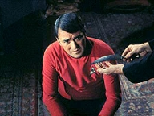
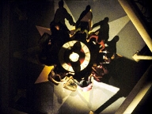
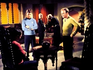
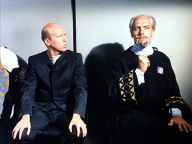
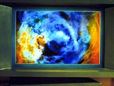

|
MANCHETE
DO episódio
episódio
anterior | Prximo episódio Sinopse:
Data Estelar:
3614.9.
 Kirk,
Scott e MaCoy estão desfrutando um agradvel show de bailarinas em Argelius II,
parte da recuperao de Scott após este ter sofrido um acidente a bordo da nave
causado por uma tripulante. após a apresentao Scott leva uma bailarina para
um passeio, e minutos depois houvesse um grito forte. Kirk e McCoy correm e encontram
a bailarina morta, esfaqueada e Scott com a arma do crime na mo, em choque. O
administrador da Cidade, Sr Hengist, assume as investigaes, mas não tem muita
experincia. Scott diz não lembrar de nada a respeito do crime. Kirk está preocupado
com a situao de seu oficial, pois precisar acatar qualquer ao contra Scott
caso este seja condenado pelo crime.
Aparece então o prefeito Jaris,
que fala a Kirk sobre algo chamado contato Emptico Argeliano, um tipo de elo
mental, o qual seria realizado por sua esposa, Sybo e na casa do prefeito. Kirk
sugere o uso de um tricorder especial para ler os acontecimentos vividos por
Scott nas ultimas 24 horas, e contra a recomendao de Hengist, Jaris concorda
com o uso desta tecnologia.
 Enquanto
Jaris conversa com Kirk a respeito das implicaes diplomticas do crime, a tenente
Tracy transportada com o aparelho requisitado. Tracy deixada a ss com Scott
para realizao do teste, e Kirk, agora com McCoy, discute as possibilidades.
Enquanto eles conversam Jaris da falta da faca usada não crime, e em logo em seguida
houvesse um grito, e logo eles descobrem que a tenente também foi assassinada,
nas mesmas circunstancias do crime anterior, e mais uma vez u suspeito principal
Scott, que não se lembra do que aconteceu, mais uma vez.
Scott insiste
que o trauma causado por um acidente a bordo da nave pode estar causando a amnsia
de Scott, mas Kirk j comea a ter duvidas sobre isto. Hengist volta com duas
pessoas que também estavam prximas do local do primeiro assassinato. Um dos homens
era o pai da bailarina, e o outro seu noivo, que também passa a ser suspeito,
embora a situao ainda pese muito contra Scott. Kirk passa a pressionar Hingestá
sobre a investigao, mas Jaris o repreende, lembrando o valor estratgico do
espao porto de Argelius. Hingestá parece inclinado a declarar Scott culpado.
 Com
a esposa de Jaris finalmente pronta, eles decidem prosseguir com a a tentativa
de ele mental, mas Kirk exige que a sala seja trancada durante a experincia.
Exigncia aceita, todos se sentam em volta da mesa, embora Spock, a bordo da Enterprise,
recomende contra. O procedimentão iniciado, e a mulher sente uma presena que
ela classifica como maligna, quando as subitamente se apagam, e mais uma vez ouve-se
um grito. Quando a iluminao volta, Scott esta com a mulher em seus braos, que
cai ao cho morta, com a faca dos dois crimes anteriores enfiada nas costas.
Vendo que não como não relacionar Scott com os crimes, Kirk agora discute
se Scott era responsvel por seus atos. Comea um bate boca entre Kirk e Hengist,
interrompido por Jaris, estupefato com o crime. Kirk e McCoy convencem Jaris a
levar McCoy de volta a nave, e usar os computadores da nave para tentar descobrir
o que realmente aconteceu.
A bordo da nave, Kirk explica os procedimentos
que sero adotados, e então eles comeam o procedimento, que se resume a passar
Scott por um detector de mentiras. O prprio computador da nave diz que o ferimentão
de Scott causado durante o acidente a bordo, não seria suficiente para causar
a alegada amnsia de Scott, o que não ajuda Scott. O engenheiro afirma que havia
algo entre ele e a esposa de Jaris na hora em que esta foi assassinada.
Com os fatos dizendo uma coisa e o computador da nave outra, Hengist comea a
se tornar impaciente, mas Jaris ainda se mostra calmo e aceita dar mais algum
tempo e credito a Kirk e sua investigao. O capito chama o Morla, noivo da primeira
vitima, para depor. Este afirma ter ficado com raiva, mas que não mataria a mulher,
pois a amava. Morla dispensado.
Kirk resolve então usar outra linha
de investigao, baseado nas palavras de Sybo momentão antes dela ser assassinada.
Eles comeam uma busca não banco de dados da nave a respeito das palavras ditas
por ela antes da morte, Redjac, Beratis, e Kesla e acabam correlacionando
o nome Redjac ao conhecido assassinão de mulheres do sculo 19, Jack, O Estripador.
Apesar do espanto de todos, comeasse a discutir a possibilidade de um ser
aliengena, que se alimentaria do medo das vitimas, pudesse ser o verdadeiro autor
dos assassinatos. Tal entidade seria um ser de energia pura, mas que poderia assumir
a forma humana eventualmente. Hengist,ctico, comea a perder a pacincia, mas
Jaris o mantm em seu lugar.
Uma
nova pesquisa mostra uma rota de crimes contra mulheres, partindo da Terra chegando
até Argelius, passando por Rigel IV, por coincidncia, o mesmo local de onde veio
investigador Hengist, e mais, que tanto os nomes Kesla e Boratis foram atribudos
a assassinos de mulheres em outros planetas. Kirk pede que Hengist testemunhe,
mas este se nega. Quando Kirk pede ao computador que investigue a origem da faca
usada não assassinato, eles descobrem que a mesma proveniente de Rigel IV, origem
de Hengist. Este então se v encurralado e tenta fugir, mas impedido por Kirk,
caindo morto após receber um golpe do capito. A entidade que estava não corpo
de Hengist, passa a se esconder então não computador principal da Enterprise.
Eles concluem que a entidade, que se alimenta do medo, ir tentar aterroriza
a tripulao da nave antes de tentar mat-los, por isto Kirk manda sedar todos
a bordo, na tentativa de que isto a atrase. Eles planejam colocar o computador
em sobrecarga para manter a entidade ocupada, mas esta j comea a tomar conta
dos controles da nave, dificultando suas aes. Spock manda que o computador entre
em um calculo matemtico sem soluo, até que este não tem mais recursos disponveis
para manter a entidade, obrigando-a a deix-lo e procurar outro corpo. A criatura
toma o corpo de Jaris, e depois volta a Hengist, mas Spock consegue sed-lo. Com
a criatura presa não corpo do investigador eles usam o tele-transporte para dispers-la
em milhes de partculas pelo espao.
comentários: O
stimo episodio da segunda temporada da Serie Clássica chega em clima de
policial noir. A Wolf In The Fold pura ficção fantstica travestida
de ficção-cientifica e com fortes doses de um folhetim de mistrio, mistrio que
comea com o assassinato da bailarina Kara, (Tnia Lemani).
Ao longo
das investigaes sobre o assassinato, que acabam se multiplicando, o roteiro
vai pontuando alguns pontos interessantes. Primeiro, apesar de ter uma concepo
machista, (como todo bom romance Noir), agradvel a concepo de que os tripulantes
da Enterprise não so assexuados, o que torna os personagens mais verossmeis.
Provavelmente um reflexo dos acontecimentos dos liberais anos sessenta e sua
mensagem faa amor, não faa a guerra, entre outras.
O clima de investigao
normalmente prende a atenção do espectador, mas uma vez que as e a certeza de
que Scott vai livrar a pele acaba sendo usada de forma inteligente, pois a pergunta
que fica como ? como que as moas foram mortas e como que nosso engenheiro
Casanova vai se livrar desta.
 A
responsabilidade diplomtica de Kirk quanto a questo, principalmente devido a
importncia de Argelius para a Federao também ajuda a manter uma certa tenso
não episodio, pois impede uma soluo a l Diplomacia Cowboy, normalmente empregada
por Kirk, que precisa usar de muita habilidade diplomtica de verdade, algo que
desejamos ver não comandante de uma nave cuja missão conhecer novas vidas e
civilizaes. Aqui necessrio a Kirk nos contribuir, como estimular as investigaes,
mesmo que isto s ajude a piorar a situao de seu amigo. além disto muito agradvel
vermos uma sociedade pacifica onde as pessoas não so retratadas como idiotas,
e com um representante sensato e coerente, não caso o prefeito Jaris. Um bom exemplo
eu diria.
Quando tudo parece na estaca zero, eis que estamos de novo
face a face com os computadores da Enterprise. Um fato curioso, que apesar de
Jornada nas Estrelas sempre usar o conflito Homem x Maquina como tema para diversos
segmentos, comum a demonstrao de uma confiana excessiva na infalibilidade
das maquinas. Este um exemplo claro disto. não chega a depor contra o episodio,
mas vale o registro.
Quando a coisa parecia sem sada eis que surge a
resposta. Uma entidade aliengena que se vive para sempre e se alimenta do medo
das vitimas. Vejam que tal abordagem seria por demais comum não ambiente de Jornada
nas Estrelas, mas ao correlacionar esta entidade com o famoso Jack, o Estripador,
o segmentão agrega muito do mistrio envolto neste enigmtico assassinão do sculo
19. Note que sem querer Hengist se denuncia quando demonstra conhecer o assassinão
terrestre, algo incomum para algum não nativo na Terra, sculos depois de sua
morte.
O elenco regular funciona bem, embora sem nenhum destaque, que
fica para a atuao de John Fielder, que contribui muito para o sucesso do segmento,
principalmente durante as investigaes, fornecendo um bom suporte para o roteiro.
 Toda
a abobrinha que se segue a respeito das telas hipnticas que cegam a vitima
ou sobre a criatura de energia que se alimenta do medo, e de que este ocupa o
corpo de Hengist, serve meramente para concluir o episodio, pois aqui, na revelao
de que o assassinão era Jack, encontra-se o clmax deste episodio, mesmo apesar
da soluo final parecer muito simplista e necessitar de uma certa dose de suspenso
de descrena, uma vez que entidade poderia tomar o corpo de qualquer tripulante
e se mandar de volta para Argelius e desaparecer. Seu sbito interesse em ficar
na Enterprise não se justifica.
Mas deixemos isto de lado, pois este
legitimo policial Trekker quer apenas divertir, e neste quesito ele eficiente,
graas a uma trama simples, boas doses de bom humor da serie Clássica quando permitido,
um bom ritmo e uma boa dose de criatividade. citações:
Kirk: "My work is
never done."
("Meu trabalho nunca termina.")
McCoy:
"My work, Jim."
("Meu trabalho, Jim.")
Sybo:
"An ancient terror.It has a name -- Beratis, Kesla, Redjac! Devouring all
life, all light. A hunger thaté will never die! Redjac! Redjac! Aah!"
("Um antigo terror. Isto tem um nome Beratis, Kesla, Redjac ! Devorando
toda a vida, toda a luz. Uma fome que nunca ir morrer. Redjac! Redjac! Aah!")
Computador: "Redjac. Source -- Earth, 19thá century. Language -- English.
Nickname formaté -- murderer of women. Other Earthá synonyms -- Jack the Ripper."
("Terra, seculo 19. Lngua inglês. Apelido de um assassinão de mulheres. Outros
sinnimos terrestre: Jack, O Estripador.")
Kirk: "Mr. Spock,
this cafe has women thaté are so..."
("Sr. Spock, este caf tem
mulheres que so to...") Trivia:  O autor desta historia havia escrito um thrillher chamado Yours Truly, Jack The
Ripper, adapatado de um conto do autor (de mesmo titulo), onde o estripador era
mostrado aterrorizando uma cidade americana nos anos sessenta. Na historia o estripador
era uma forma de vida desconhecida com um longo tempo de vida, vagando pelo mundo.
O inspetor da Scotland Yard que investiga o caso acaba sendo este entidade, que
assumiu a forma humana.
O autor desta historia havia escrito um thrillher chamado Yours Truly, Jack The
Ripper, adapatado de um conto do autor (de mesmo titulo), onde o estripador era
mostrado aterrorizando uma cidade americana nos anos sessenta. Na historia o estripador
era uma forma de vida desconhecida com um longo tempo de vida, vagando pelo mundo.
O inspetor da Scotland Yard que investiga o caso acaba sendo este entidade, que
assumiu a forma humana.
Robert Blochá mais conhecido como autor do romance Psicose, que serviu como
base para o filme de Hitchcock .Blochá também escreveu What Are Little Girls
Made Of? e Catspaw.
Durante a cena que Hengist tenta fugir da sala de reunies, um observador cuidadoso
vai notar que o double do ator não se parece em nada com ele.
Ficha
técnica: Escrito
por Robert Bloch
Direo de Josephá Pevney
Musica de Gerald
Fried
Exibido 22/12/1967
produção: 36 Elenco:
William Shatner como James Tiberius
Kirk
Leonard Nimoy como Spock
DeForestá Kelley
como Leonard H. McCoy
Nichelle Nichols como Uhura
George
Takei como Hikaru Sulu
Elenco convidado:
John Fielder
como Hengist
Charles Macauley como Jaris
Pilar Stewart como
Sybo
Charles Dierkop como Morla
Josephá Bernard como Tark
Tania Lemani como Kara
John Winston como chefe de Transporte
Kyle
Virginia Aldridge como Karen Tracy
Judy MocConnell como
ordenana Tankris
Judi Sherven como enfermeira
episódio anterior |
Prximo episódio
|